ファイルやコマンドの出力を画面単位で区切って表示(MORE)
ファイルやコマンドの出力が非常に長い場合にスクロールさせずに画面単位でいったん区切って表示することができる MORE コマンドの使い方について解説します。
目次
MOREコマンドの使い方
MORE コマンドはリダイレクトやパイプによって標準入力から入力されたデータを画面単位で区切って標準出力へ出力します。非常に長いデータを一気にコマンドプロンプトへ出力すると画面がどんどんスクロールしてしまいます。MORE コマンドを使用することで1画面に表示できるだけの情報を表示し、キー押す事によって続きの内容を順に見ることができます。
※リダイレクトやパイプについては「リダイレクトとパイプ」を参照して下さい。
MORE コマンドの書式は3つあります。リダイレクトを使用する場合の書式は次の通りです。
MORE [/E [/C] [/P] [/S] [/Tn] [+n]] < [ドライブ:][パス]ファイル名
「/E」オプションを付けて拡張機能を有効にした場合は次のようにファイルを記述することもできます。
MORE /E [/C] [/P] [/S] [/Tn] [+n] [ファイル]
パイプを使用する場合の書式は次の通りです。
コマンド名 | MORE [/E [/C] [/P] [/S] [/Tn] [+n]]
それぞれ確認していきます。
リダイレクトを使ってファイルの内容を画面毎に表示する
MORE コマンドに対してリダイレクトを使って標準入力の入力先としてファイルを指定すると、ファイルの内容を画面毎に表示することができます。例えばカレントディレクトリにある memo.txt を画面毎に表示するには次のように実行します。
more < memo.txt
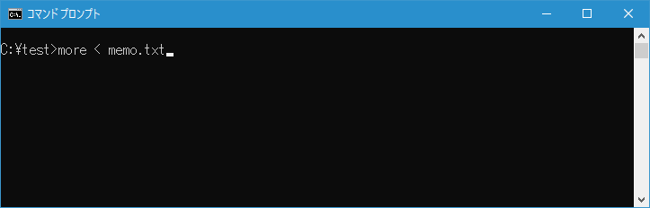
MORE コマンドを実行すると、memo.txt の内容をまず1画面分だけ表示して停止します。

何かキーを押すと、次の1画面分の内容が表示されます。
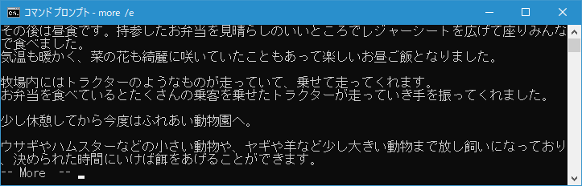
繰り返しキーを押していき、最後に残りの部分を表示します。
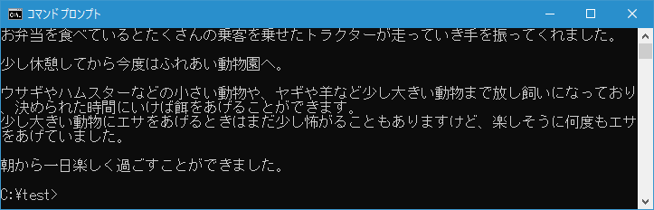
このように MORE コマンドを使用することで長い文章が記述されたテキストファイルを表示する時に、1画面毎に区切って読むことができます。
-- --
MORE コマンドを実行する時に「/E」オプションをつけて拡張機能を有効にすると次のように実行することもできます。
more /e memo.txt
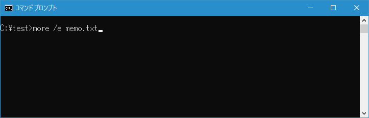
拡張機能が有効になっていると、画面の移動をもう少し細かく制御することができます。これはこのページの最後でご紹介します。
パイプを使ってコマンドの実行結果を画面毎に表示する
MORE コマンドに対してパイプを使い、別のコマンドの実行結果を MORE コマンドの標準入力の入力先とし指定すると、コマンドの実行結果を画面毎に表示することができます。例えば TYPE コマンドを使いカレントディレクトリにある memo.txt の内容を表示する時に画面毎に表示するには次のように実行します。
type memo.txt | more
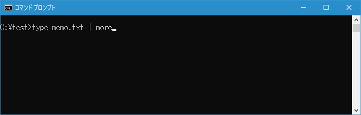
MORE コマンドを実行すると、TYPE コマンドによって画面に出力された memo.txt の内容をまず1画面分だけ表示して停止します。
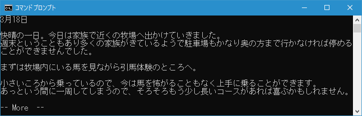
何かキーを押す毎に次の1画面分の内容が表示されます。最後に残りの部分を表示します。
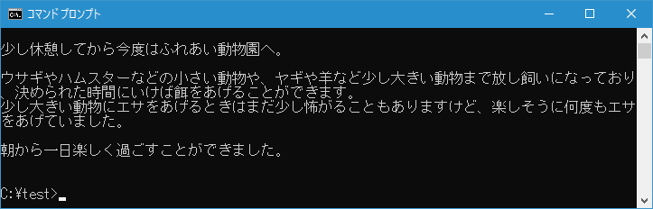
このように MORE コマンドとパイプを組み合わせることで、実行結果を画面に表示するコマンドを実行した時、1画面ごとに結果を表示することができます。
拡張機能が有効な時のキー操作について
MORE コマンドを実行する時に「/E」オプションを指定して拡張機能を有効にすると、1画面分の表示をして止まった時に次のキー操作を行うことができます。
P n 次の n 行を表示します
S n 次の n 行をスキップします
F 次のファイルを表示します
Q 終了します
= 行番号を表示します
? ヘルプを表示します
<space> 次ページを表示します
<ret> 次の行を表示します
では実際に試してみます。MORE コマンドを実行する時に「/E」オプションをつけて実行してください。
more /e memo.txt
では実際に試してみます。MORE コマンドを実行する時に「/E」オプションをつけて実行してください。

1画面分表示して止まります。
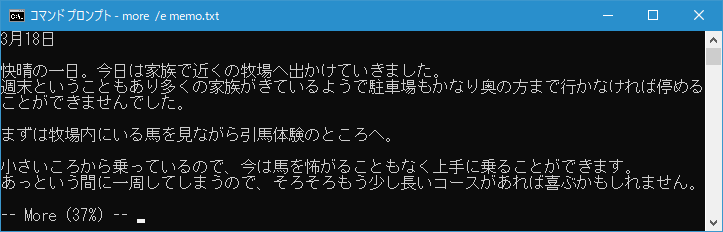
ここで[Enter]キーを押すと次の1行を表示します。
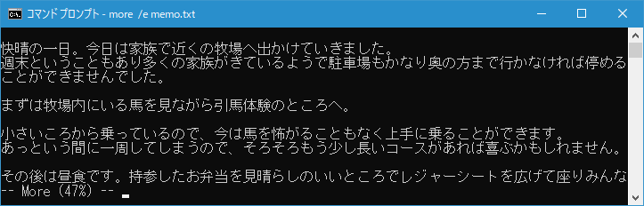
[p]キーを押すと「行数」と表示されるので数値を入力して[Enter]キーを押すと、入力した数値の行数を表示します。
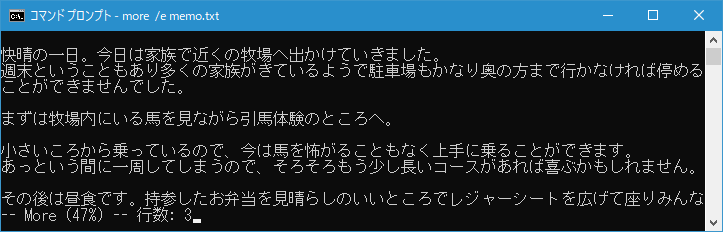
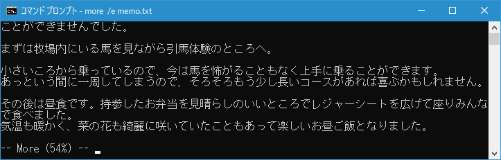
このようにより細かく表示される部分を制御することができます。なお拡張機能が有効でないときと同じように次の1画面分を表示するには[Space]キーを押してください。
指定した行数から表示する
MORE コマンドを使うときに、「/E」オプションを付けて拡張機能を有効にした上で「+n」オプションを付けることで、最初からではなく指定した行数から表示を開始することができます。例えばファイルを表示するときに、最初の何十行は不要な場合などに便利です。例えば TYPE コマンドを使いカレントディレクトリにある memo.txt の内容を表示する時に5行目から表示を開始するには次のように実行します。
type memo.txt | more /e +5
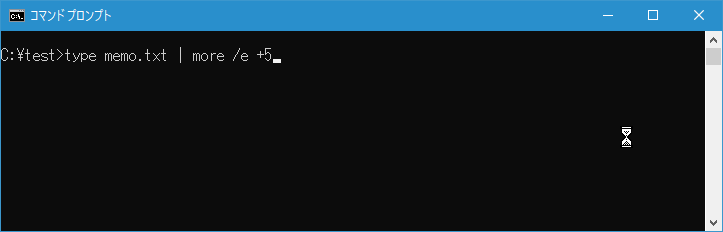
ファイルの最初からではなく5行目から表示が開始されます。
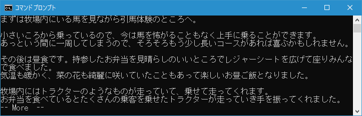
-- --
MORE コマンドを使ってファイルの内容を出力するときやコマンドの実行結果を画面に表示する時に1画面毎に表示する方法について解説しました。
( Written by Tatsuo Ikura )

著者 / TATSUO IKURA
初心者～中級者の方を対象としたプログラミング方法や開発環境の構築の解説を行うサイトの運営を行っています。